In China Employee Termination: Pulse Risk-Thermometer Brief for Foreign Employers (2026 Hourly Run)
Key takeaways
- China termination risk is easier to manage when teams grade case temperature before acting.
- Foreign employers should not treat all cases as equal; escalation depends on trigger severity.
- The highest-risk condition is still coherence failure across legal route, evidence, communication, and payroll settlement.
- Payroll and tax treatment are risk-temperature drivers, not post-decision admin steps.
- Legal depth should support action; operational gating determines outcome quality.
Pulse opener: read the temperature before you move
Cross-border teams in China often make the same mistake: they decide pace before they decide risk temperature. A case that feels “routine” in headquarters can already be warm or hot locally because route confidence is partial, evidence ownership is fuzzy, or settlement assumptions are unresolved. By the time this becomes visible, teams are already committed to communications and need expensive reversals.
This run uses a risk-thermometer format to improve decision speed without sacrificing control quality. It gives foreign operators a plain-language way to classify cases and apply consistent go/pause/escalate actions.
Plain-language legal context first
In China, termination is generally route-based under labor law and implementation regulations. In disputes, defensibility often turns on whether process records and execution behavior are consistent with the stated route. If documentation and actions diverge, exposure rises.
For foreign teams: treat termination as a coherence exercise, not just a legal opinion. If one control domain is unstable, the case temperature is higher than it appears.
Risk thermometer: classify before action
Temperature 1 — Low (stable)
Typical profile: route is clear, evidence is complete, communication is aligned, and payroll settlement logic is pre-validated.
Action: proceed with standard monitoring and closure controls.
Temperature 2 — Guarded (watch)
Typical profile: core route is likely correct, but one non-critical dependency is unresolved (for example, document traceability or local wording precision).
Action: proceed only with owner/date fix plan and explicit checkpoint before release.
Temperature 3 — High (pause)
Typical profile: material inconsistency exists across legal/HR/payroll, or local uncertainty could change practical exposure.
Action: pause release, run cross-functional coherence review, and require updated risk statement.
Temperature 4 — Critical (escalate)
Typical profile: route confidence is weak, evidence is disputed, settlement assumptions conflict, or communications already diverged.
Action: escalate immediately to senior legal/HR governance; no release until critical conditions are closed or risk accepted explicitly.
Trigger map for foreign operators
Use these triggers to set temperature quickly:
- Route confidence below clear → at least Guarded.
- Evidence owner cannot attest completeness → High.
- Payroll/legal assumption mismatch → High or Critical.
- Local uncertainty unresolved near release → High.
- Employee-facing text differs from approved rationale → Critical.
- Archive not retrieval-tested at closure → Guarded/High depending on case sensitivity.
Practical implications for foreign operators
The thermometer model improves executive and operating alignment. Leadership gets a concise readiness view, while local teams get clear authority to pause when temperatures rise. This reduces “silent risk acceptance,” where timeline pressure overrides unresolved control gaps.
For finance and payroll leaders, temperature classification also improves forecast quality. High and Critical cases should carry explicit contingency assumptions, while Low and Guarded cases can move under normal cadence.
Operations package
A) SOP by role ownership
Legal: set route type, confidence level, and non-negotiable assumptions.
HR: maintain chronology, communication package alignment, and manager script control.
Payroll: validate settlement components, IIT logic, social insurance handling, and release sequencing.
Manager: follow approved communication boundaries only.
Vendor/EOR: maintain shared status fields and unresolved issue visibility.
B) Document checklist and temperature gates
Required release documents:
- route memo with confidence,
- evidence index with owner/location,
- timestamped decision log,
- aligned communication set,
- settlement worksheet + tax notes,
- archive index + retrieval owner.
Gate logic:
- Low: all required documents complete and aligned.
- Guarded: one non-critical gap with assigned owner/date.
- High: any material mismatch or unresolved local uncertainty.
- Critical: route/evidence/settlement contradiction or external communication divergence.
C) Exception handling pathways
Pathway 1: late evidence gap → raise temperature to High, hold release, remediate with owner/deadline.
Pathway 2: payroll/legal conflict → High/Critical, freeze settlement and issue joint interpretation note.
Pathway 3: local variance risk → High, escalate with exposure range and mitigation options.
Pathway 4: communication drift detected → Critical, stop release and re-approve narrative baseline.
Pathway 5: closure retrieval failure → reopen closure and remediate before final completion.
D) System controls and audit fields
Core fields:
risk_temperatureroute_confidenceevidence_integritynarrative_alignmentsettlement_readinesslocal_uncertainty_statusarchive_retrieval_pass
Control recommendations:
- block workflow progression when temperature is High/Critical without approved override,
- require immutable timestamps for overrides and approvals,
- review monthly trendline: temperature distribution and time spent in High/Critical states.
Common errors and fixes
Error: classifying by urgency, not by risk conditions
Fix: assign temperature from triggers first, then decide pace.
Error: treating Guarded as “good enough” indefinitely
Fix: enforce closure deadlines for Guarded gaps.
Error: escalating only after communications are sent
Fix: define pre-release escalation points tied to temperature changes.
Error: excluding payroll from readiness reviews
Fix: make settlement sign-off mandatory before release.
Error: weak closure discipline
Fix: include retrieval pass rate in KPI stack.
What to watch next
Foreign employers should monitor recurring High/Critical triggers by city and business unit. Repeat patterns usually signal design flaws rather than one-off mistakes. They should also watch if average time in High temperature is growing; this often predicts future dispute cost and operational drag.
Additional operating depth: foreign-team handoff discipline
Temperature errors often come from handoff friction rather than legal misunderstanding. A regional legal team may classify a case as Guarded, while local HR reads it as High because one evidence source is still unverified. If this difference is not surfaced explicitly, teams can unknowingly execute at the wrong temperature. To avoid this, each handoff should include three mandatory fields: current temperature, reason code for that temperature, and the next condition required to downgrade risk. This keeps distributed teams aligned on the same risk state.
For multinational operators, this handoff discipline is especially important near payroll cutoff periods. Cases that appear administratively ready can still carry unresolved assumptions that materially affect settlement defensibility. Embedding temperature reason codes in case trackers gives leaders a practical early-warning system and reduces surprise escalations.
Executive dashboard suggestions
A useful dashboard for this model should track both volume and quality. At minimum, monitor (1) share of active cases by temperature band, (2) average hours spent in High/Critical status, (3) number of override approvals, and (4) recurrence of the same trigger type across business units. The objective is not to penalize teams for escalation, but to identify process bottlenecks before they become disputes.
Foreign leadership should also review whether High/Critical cases are concentrated in particular cities or manager cohorts. Concentration patterns usually point to training gaps or local workflow mismatches that can be fixed with targeted process updates.
FAQ
Does this thermometer replace legal analysis?
No. It operationalizes legal and process risk for faster cross-functional decisions.
How many temperature bands are enough?
Four bands are usually sufficient for practical governance.
Can small teams use this?
Yes—start with temperature + four core fields (route, evidence, settlement, alignment).
What triggers immediate executive escalation?
Critical temperature conditions: route instability, major evidence conflict, or communication divergence.
Is this framework city-agnostic?
Baseline controls are broad, but city-level practice differences should still influence final decisions.
Does this replace local counsel?
No. It complements local legal/payroll advice by improving execution consistency.
Legal appendix (secondary depth)
1) Legal anchors
The PRC Labor Contract Law and implementation regulations provide the statutory framework. SPC interpretations inform labor-dispute application and evidentiary treatment.
2) Practitioner/market synthesis
Practitioner sources emphasize route discipline and documentary coherence. Market and payroll sources reinforce settlement/tax handling as practical risk factors.
3) Residual uncertainty
City-level variations remain relevant in edge cases; high-exposure matters require localized professional advice.
Source-fit note for this run
This run kept the required source mix and rotated to a risk-thermometer structure to improve Pulse-style clarity for foreign operators. Duplicative content from prior control-room/red-flag formats was removed and replaced with trigger-based temperature decisions.
Disclaimer
This content is informational only and does not constitute legal, tax, payroll, accounting, or compliance advice. Employers should seek qualified local professional advice for case-specific decisions.
Sources
- National People's Congress. Labor Contract Law of the PRC (English text). Accessed 2026-02-28: http://www.npc.gov.cn/zgrdw/englishnpc/Law/2007-12/13/content_1384064.htm
- State Council. Implementation Regulations of the Labor Contract Law (Decree No. 535). Accessed 2026-02-28: https://www.gov.cn/gongbao/content/2008/content_1124615.htm
- Supreme People's Court. Interpretation (I) on Application of Labor Dispute Law. Accessed 2026-02-28: https://www.court.gov.cn/fabu/xiangqing/243981.html
- China Briefing. Employee Termination in China. Updated 2025-10-17, accessed 2026-02-28: https://www.china-briefing.com/news/employee-termination-in-china/
- Littler. Key Recent Developments in China's Employment Law. Published 2024-03-20, accessed 2026-02-28: https://www.littler.com/news-analysis/asap/key-recent-developments-chinas-employment-law-china-us-comparative-perspective
- PwC. PRC Individual Taxes on Personal Income (Tax Summaries). Accessed 2026-02-28: https://taxsummaries.pwc.com/peoples-republic-of-china/individual/taxes-on-personal-income
Need local employment support in China?
If you need a compliance-first partner for hiring, payroll, and risk controls in China, China-Payroll.com can help evaluate the right setup.
Image Prompt Pack
Create a 16:9 hero image for article title: 'In China Employee Termination: Pulse Risk-Thermometer Brief for Foreign Employers (2026 Hourly Run)'. Scene: global operations team evaluating workforce model options for China market entry. Include motifs: decision…